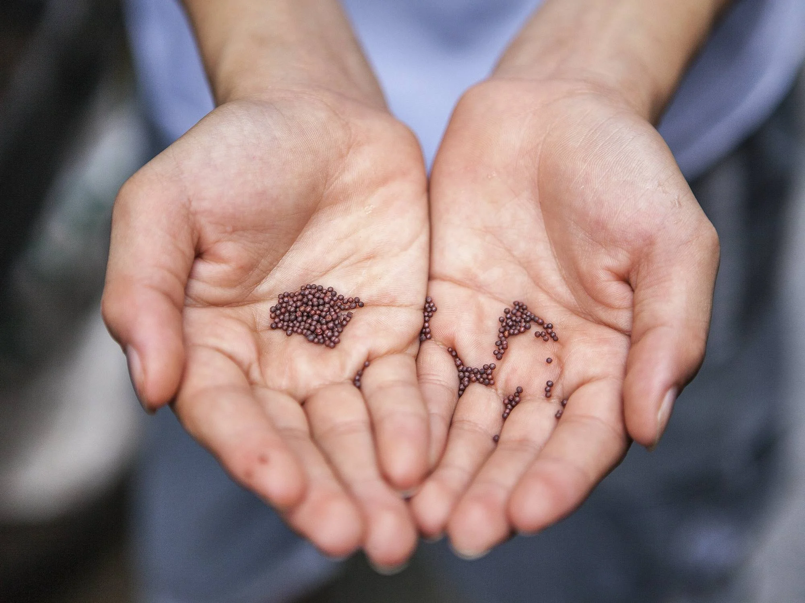
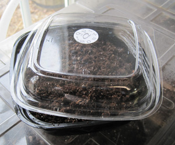
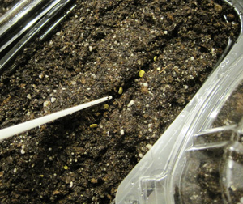
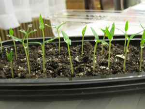

How to Successfully Plant a Seed
Materials
- Seeds
- Soil
- Container/Pot
- Water

For beginners, using a Pothos or Philodendron seed is the best.
Step 1

Select your desired container and fill with moistened soils. Be sure to firm the surface.
Step 2

Make shallow indentations based on the planting depth for your specific seed.
Step 3

Place your seeds into the indentations, cover, and lightly water the surface.
Be sure to place your contianer in a well-lit and warm area while you wait for your seeds to sprout.